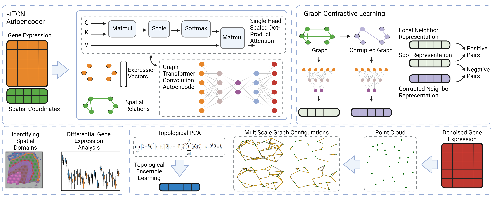
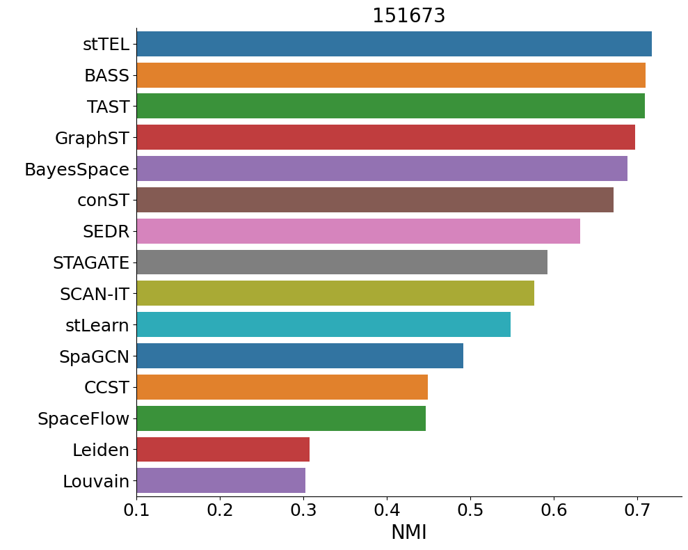

This is stTEL, a graph Transformer Convolution Network Autoencoder enabled topological representation and ensemble method for Spatial Transcriptomics data. A series of TCN layers are used to encode the gene expression data while respecting the spatial relations in the tissue architecture. Meanwhile, a DGI like graph contrastive learning technique is used to refine the encoder output by training a discriminator on randomly permuted gene expression vectors. The output of the decoder is then a denoised gene expression matrix, which we use for topological analysis.
A series of cell-cell similarity graphs are constructed via kNN-induced filtration in the gene expression space. Various combinations of these graphs are used in Topological PCA to create a sequence of latent representations, which are then individually clustered and fed to a hierarchical clustering algorithm for the final spatial domain detection.
The model was shown to perform competitively on the commonly benchmarked 151673 DLPFC sample from 10x Visium. However, the improvement over other DL methods was incremental and not as significant as TAST, so I have not worked extensively on optimizing or benchmarking this model.